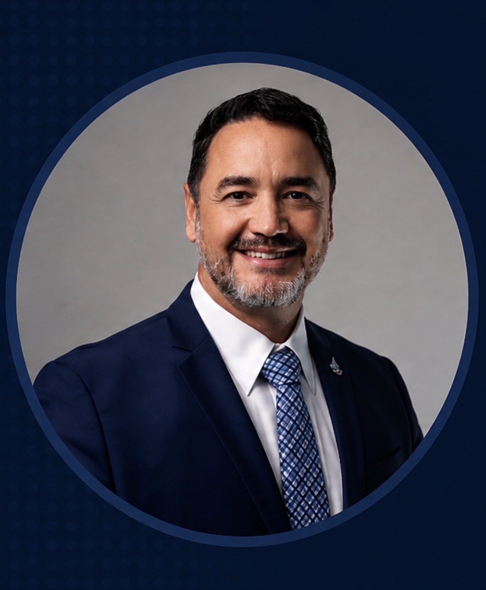

Oil Technologies & Solutions is an independent engineering consultancy specializing in electrostatic dehydration & desalting, crude processing optimization, and project execution — objective expertise that lowers technical risk and improves asset performance.
Every engagement starts with a business challenge — not a service. We diagnose the root cause, then engineer a practical, implementable fix.
High salt content (PTB) and BS&W from underperforming dehydration and desalting.
Electrostatic units operating below design — poor separation, carry-over, and grid trips.
Throughput and efficiency limits capping production and leaving margin on the table.
Instability, off-spec product, and trips that cascade into lost margin and rework.
Recurring equipment problems and unplanned downtime that erode asset value over time.
Schedule slips, cost overruns, and technical risk in engineering and execution.
Hard-to-judge vendor claims and technology choices before major capital commitments.
New facilities failing to reach nameplate performance and reliability at commissioning.
Expand any service to see the client problem, our engineering approach, the deliverables you receive, and the business impact we hold ourselves to.
Every engagement follows the same rigorous, auditable sequence — so recommendations are defensible and results are repeatable.
Objectives, constraints, and the technical & commercial risk defined.
On-site evaluation, sampling, and operating-data capture.
Lab and field analysis to isolate the real mechanism.
Evidence-based RCA, independent of any vendor.
Engineered, costed, and de-risked recommendations.
Implementation, FAT, commissioning, and start-up.
Measurement against the baseline we set.
Whether you run the facility, build it, supply the technology, or fund it — you get the same objective engineering judgment, free of vendor bias.
Optimize dehydration & desalting and crude processing, improve reliability, and lower operating cost.
Independent design reviews, technical interface management, FAT, and execution support.
Engineering validation, technical positioning, and commercialization strategy for new process technologies.
Independent technical due diligence and engineering assessment before capital commitments.
Drag to compare — crude quality before and after a desalting optimization program.
Representative outcomes from engineering and advisory engagements across crude processing, desalting, and project execution.
A crude-unit desalter ran with high salt carry-over and off-spec crude. Independent diagnosis and electrostatic optimization restored dehydration and separation performance.
A processing project faced technical and execution challenges. An independent audit, root-cause analysis, and hands-on execution leadership put it back on track.
A technology provider needed credible validation before commercial deployment. Engineering validation and technical positioning strengthened the offering for market.
The same engineering rigor, tuned to the fluids, equipment, and economics of each segment.
Production separation, treating, and crude dehydration.
Crude handling, storage, and quality management.
Desalting, crude units, and process optimization.
Dehydration, desalting, and separation systems.
Treating, dehydration, and processing facilities.
Feed quality, water chemistry, and process reliability.
We are advisers, not an equipment supplier. Recommendations follow the engineering evidence, never a product line — so your interests and ours stay aligned.
Led by founder Francisco E. Vera — 34 years in oil & gas, 18 of them at SLB, and a PMP®-certified record of international project execution.
Deep, hard-to-find engineering expertise in dehydration and desalting systems, across upstream and downstream crude processing.
Backed by field data and defensible root-cause analysis, and engineered to be implementable — tangible outcomes, not theoretical studies.
We set a baseline, define the KPI, and prove value in your numbers — lowering both technical and execution risk.
We stay through implementation and build your team's capability, so results are sustained long after the engagement.

Francisco brings 34 years in the oil & gas industry, with roles at PDVSA (Corpoven), PECOM Energy, and Petro Equipos de Venezuela — spanning crude oil dehydration and desalting, technology evaluation, and the development of oilfield infrastructure and services.
He spent 18 years with SLB — through the Natco, Cameron, and Schlumberger acquisitions — as a subject-matter expert in electrostatic dehydration–desalting, production-facilities design, and operation and optimization across onshore, offshore, and refinery domains, with a focus on new product and technology development.
"Our recommendations follow the engineering evidence — never a product line. That independence is what turns technical advice into measurable business value."
Bring us your toughest desalting, crude processing, or project-execution challenge. We'll scope it, define the KPI, and show you the independent engineering path to a measurable result.